Start with the piece.
A campaign introduces the possibility. A plain-language index helps someone describe the garment, place and intention.
Explore the repair desk ↗A considered next chapter
for the clothes you keep.
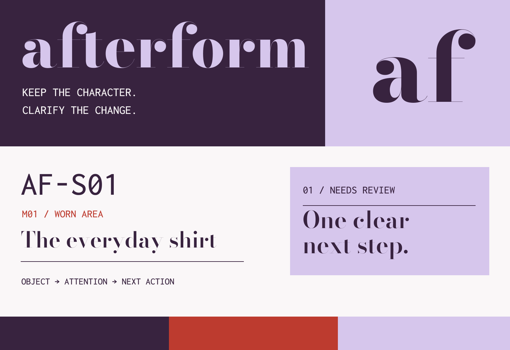
AFTERFORM is a garment-repair studio concept connecting a clear request, a considered proposal and a record that stays with the piece. Its identity works just as hard on a small label as it does in the interface.
They know where something is worn, but may not know the material or method. The interface begins with their observation and keeps “Not sure” available.
A preference is not a practical repair plan. The proposed scope, finish and price need to be understood before a decision is recorded.
A campaign introduces the possibility. A plain-language index helps someone describe the garment, place and intention.
Explore the repair desk ↗The request and proposed approach stay together. Questions keep the decision pending; a revision resets approval.
Review an example proposal ↗The tag opens a sample record. That record can begin a fresh request without overwriting its earlier story.
Start from an earlier record ↗These three instructions shape the hierarchy of a page, the zones on a tag and the steps in the product. The identity carries meaning even when its logo is absent.
Plum, vermilion, lilac and poplin remain. Bodoni Moda introduces the emotional value of clothing; Karla makes decisions and directions clear; Inconsolata keeps the records consistent.
The wordmark gains service lockups, a compact avatar and a simplified small-size symbol. The sixteen-page standards manual documents clear space, size, colour behaviour, imagery, labels and motion.
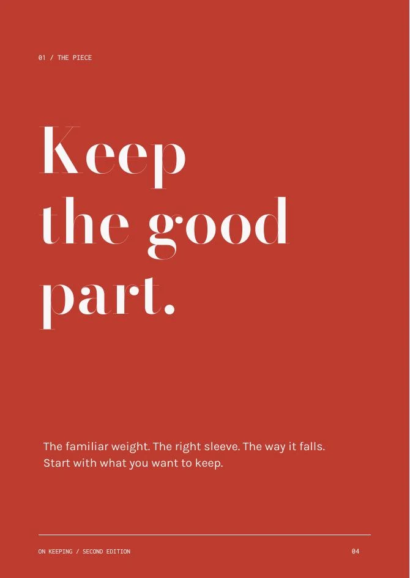
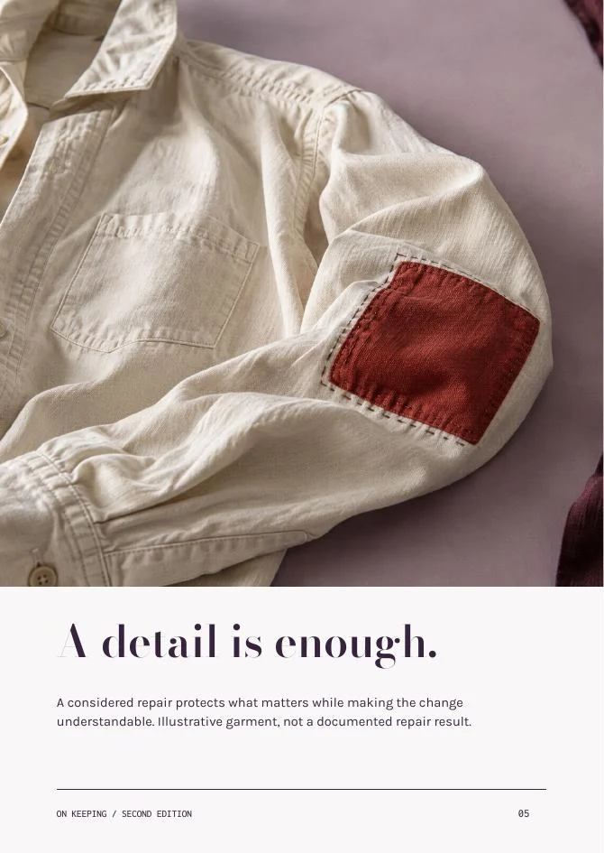
Twenty-four pages move from an invitation to a decision. The four-part sequence covers the piece, the choice, the agreement and the next chapter.
170 × 240 mm, proposed saddle stitch, a two-column underlying grid and a 6 mm spacing rhythm. The original twelve-page guide is preserved in the archive.
Full material crops make room for quiet reading pages. A repair index handles density. Facing request/proposal pages expose the difference between intention and assessment.
Read all 24 pages and the text edition ↗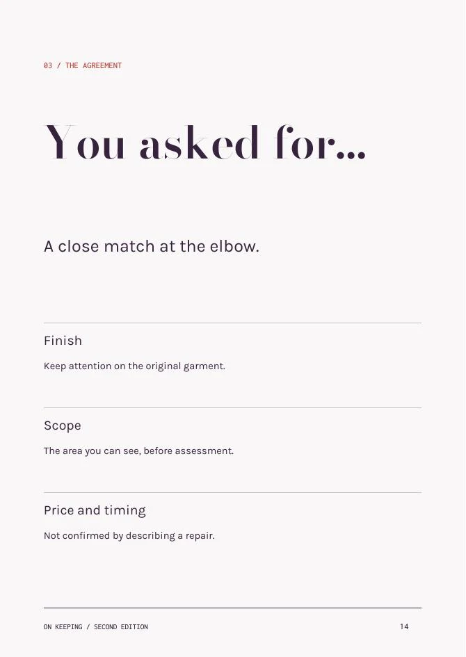
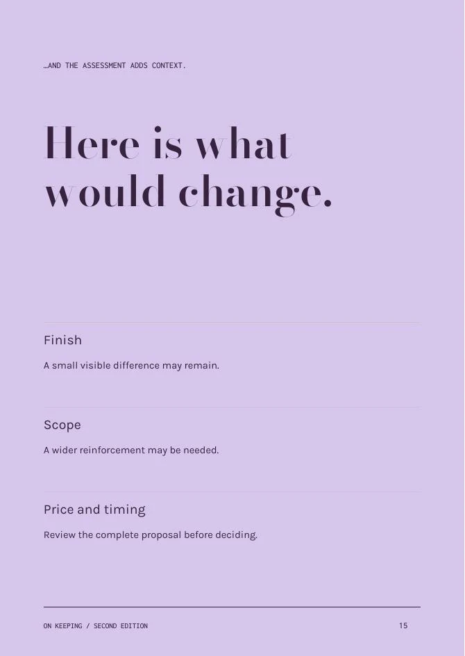
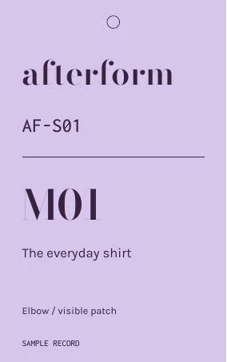
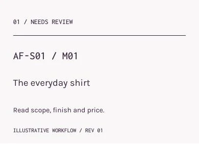
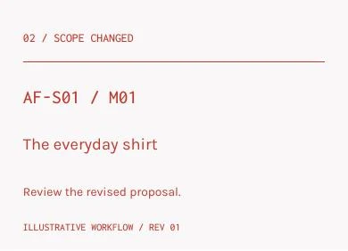
The fixed reading order is object → attention → next action. A code helps the studio; a description helps the person. Status is never communicated by colour alone.
Content tests show a deliberate tradeoff: longer descriptions move to a taller tag, rather than shrinking the essential type. Monochrome output preserves every information cue.
The product makes a proposed change inspectable. A question is a valid next step; approval is a reversible state attached to the current revision.
The person describes the piece, the location and the intended finish. They are not asked to diagnose the repair.
The example studio proposal adds scope, finish limits and an illustrative price. Timing is explicitly unconfirmed.
A question keeps the proposal pending. Saving changed details invalidates the earlier approval and asks for a new review.
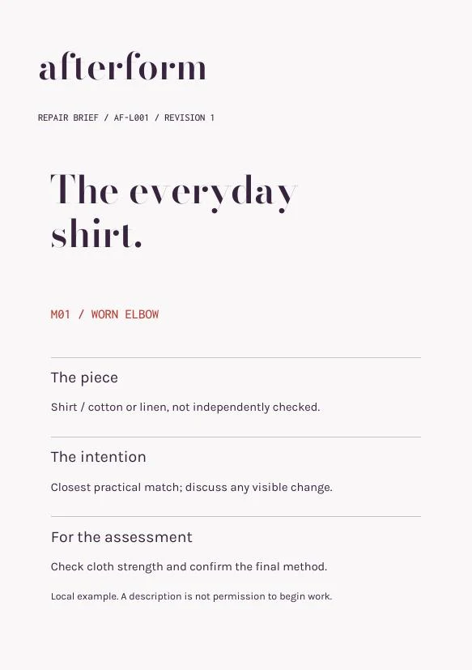
The saved request produces a print view and downloadable text copy. The ID and revision identify which details are being discussed. A visible statement distinguishes description from permission to begin work.
A private local request gets no pretend public QR. Fixed sample garment records have real QR destinations and typed-ID fallbacks.
Try the paper brief ↗The original record can seed a new assessment with the garment already identified. The earlier record remains unchanged, and the new request still asks the person to check the place and material.
Try the returning-garment flow ↗
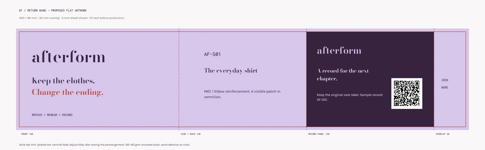
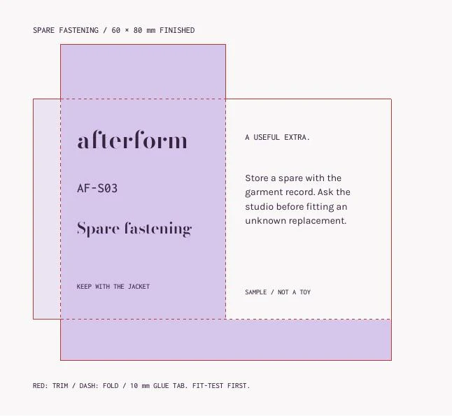
The materials support a natural handover: a band keeps the information with the piece, a sleeve protects the record, and a small envelope keeps a spare fastening from becoming loose. No merchandise or luxury box is added without a role.
Inspect the complete service paper system ↗
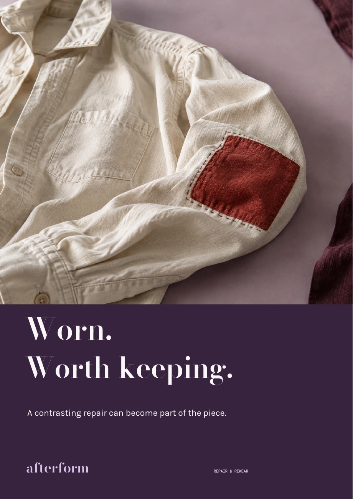

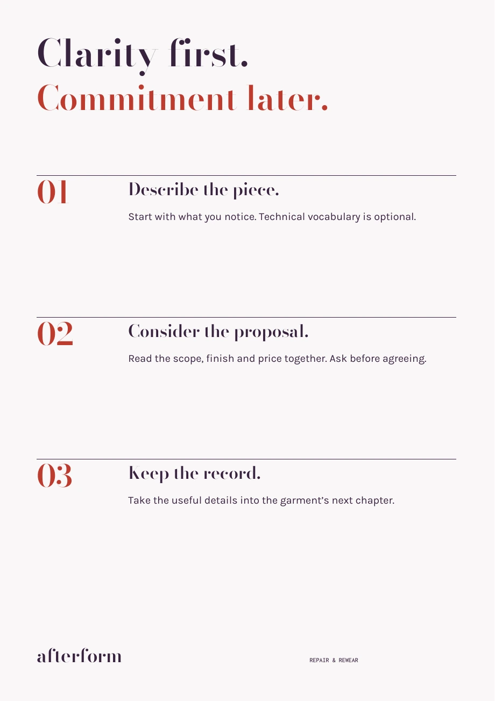
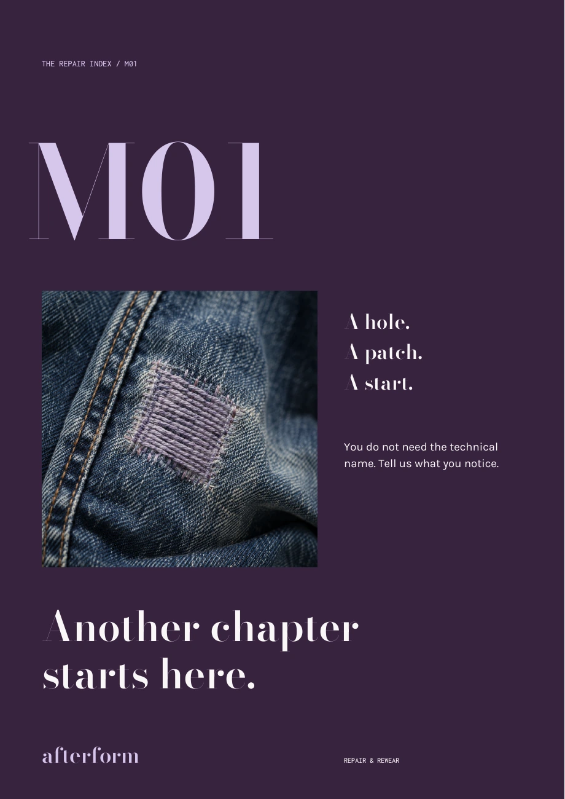
The five original poster compositions stay. The new announcement, editorial, information, story, reel-cover and reminder formats adapt the hierarchy for different reading speeds and crops.
Explore all campaign masters ↗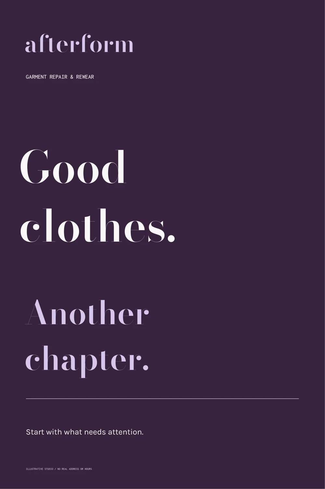
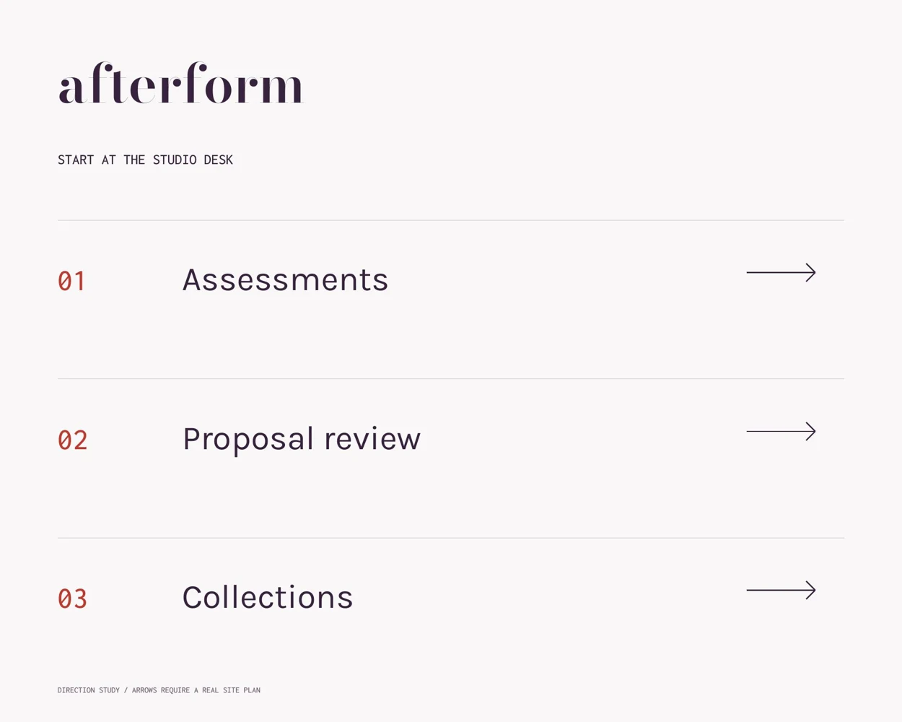
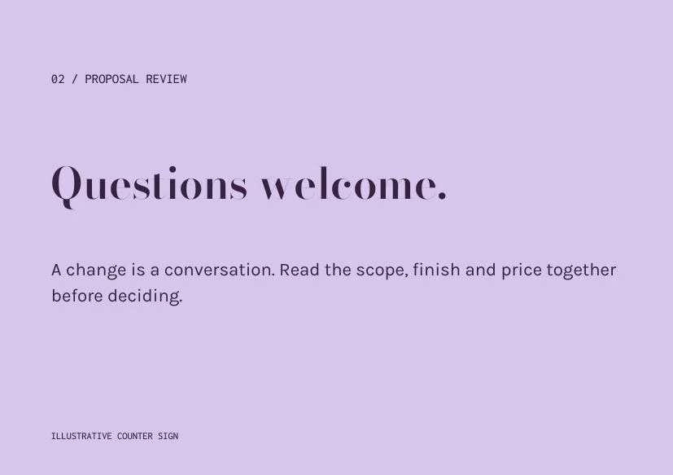
Display typography welcomes. Karla names destinations. The same service stages appear in the printed materials and the interface. These are dimensioned design studies; a real site and physical legibility checks are still required.
Inspect the environmental set ↗A service lockup belongs on a larger panel. A compact mark belongs in an avatar. At 16 px, the joining symbol removes fragile display detail.
Persistent form labels, focus rings, text-based status, required-choice errors, reduced motion and a complete HTML publication text edition.
Drafts, local requests, questions, approval, revisions, paper briefs and returning records follow explicit rules. Screen studies remain isolated from visitor data.
Measured text pairs: plum/poplin 13.32:1, plum/lilac 8.88:1, vermilion/poplin 5.15:1. Vermilion on lilac is reserved for large display text.
Colour and DOM checks do not establish full accessibility. Manual browser, keyboard, screen-reader and actual-size print testing remain necessary.
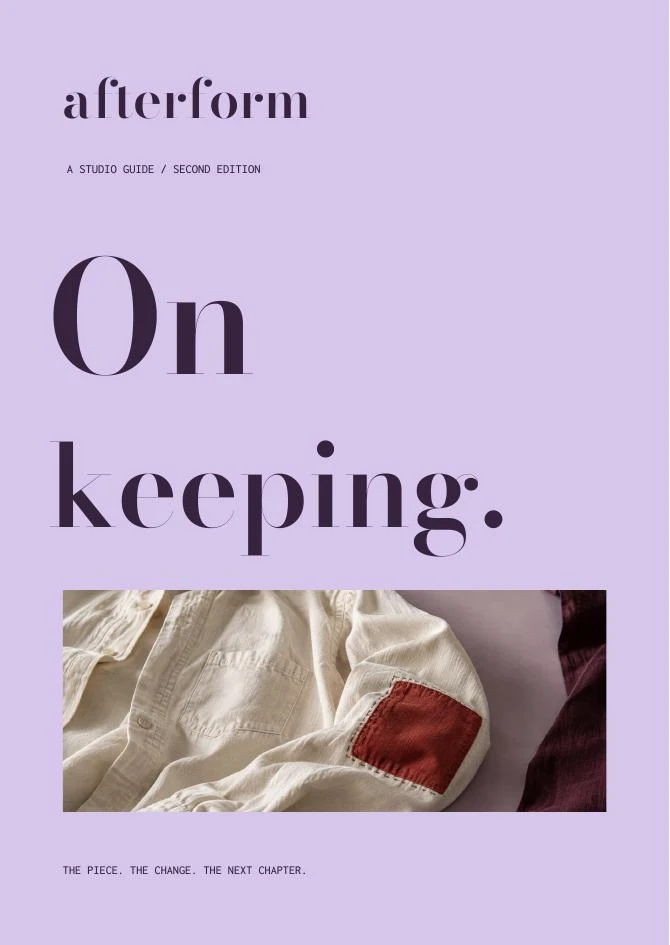
The graphic system helps people recognise the piece, understand a proposed change and carry useful information into the next conversation. The physical and digital work solve the same problem.
A distinctive identity with a transferable standards manual. A complete editorial sequence. Practical print, packaging and environmental artwork. A functioning prototype with meaningful decisions, alternate paths and two cross-channel additions.
The central tradeoff is intentional: add enough structure to protect understanding, while keeping the emotional value of a garment visible.
Observe how people describe damage. Test expectations around “closest practical match.” Ask repairers which details they need. Print, fold and scan the physical pieces. Review the interface with keyboard and assistive technology.
No clients, interviews, repair outcomes, sales or environmental savings are claimed. The material and application images are labelled illustrations; flat artwork and product logic remain inspectable.